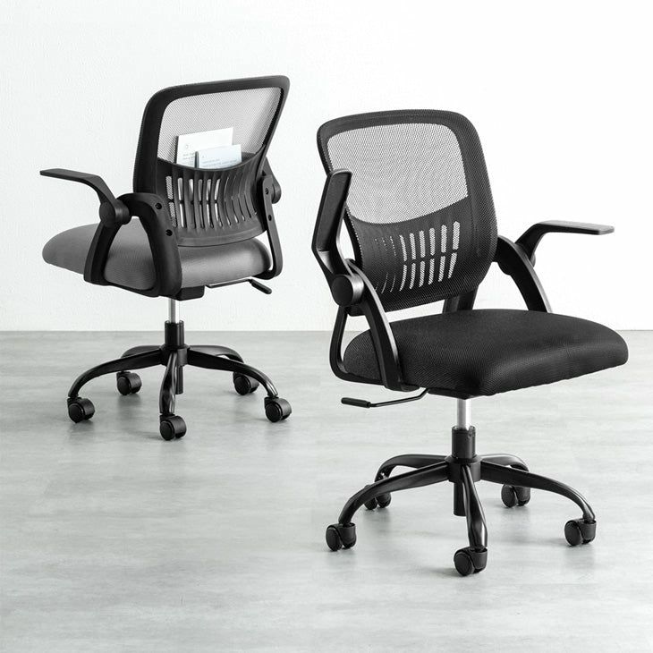
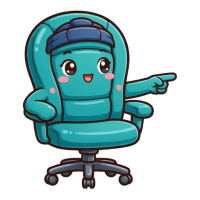
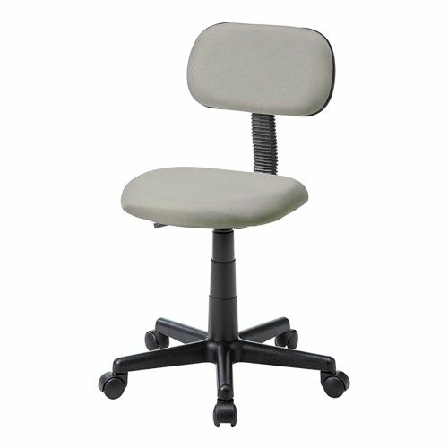
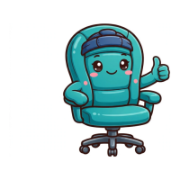

一人暮らしの仕事机まわりを整える5つの方法｜サイズ・高さ・収納を先に決める


こんにちは、カグヤです。一人暮らしの机まわりは、買い足す前に「置き場所・サイズ・高さ・収納」の順に決めると散らかりにくくなります。
一人暮らしの部屋では、仕事・食事・くつろぎの場所が重なります。机まわりに置くものが決まっていないと、物が少しずつ広がり、作業のたびに片付けが必要になります。この記事では、机まわりを整える方法を5つに分けて説明します。この記事で分かることは、机まわりが散らかる理由、置き場所とサイズを先に測る方法、机と椅子の高さの合わせ方、収納を机まわりに寄せる方法、そして家具をまとめて探すときの選択肢です。
- 方法1：置き場所を決める（仕事の場所と生活の場所を分ける）
- 方法2：サイズを測る（置く場所の幅・奥行・高さと、通路の幅）
- 方法3：机と椅子の高さを合わせる
- 方法4：よく使う道具の収納を机の近くに寄せる
- 方法5：足りない家具は通販でまとめて比べる
一人暮らしで机まわりが散らかる理由
理由は大きく2つあります。1つ目は、1つの机が仕事・食事・趣味の全部の受け皿になっていることです。置く場所が決まっていない物は、とりあえず机の端に置かれ、そのまま積み重なっていきます。2つ目は、収納が机から遠いことです。出し入れに手間がかかる場所へは戻すのが面倒になり、物が机の上に残り続けます。どちらも「片付けが苦手」だからではなく、置き場所の設計の問題です。
方法1〜2：置き場所を決める・サイズを測る
方法1：置き場所を決める
まず、机を置く場所と、椅子を引いたときに必要な後ろのスペースを決めます。仕事の場所が固定されると、食事やくつろぎの場所と自然に分かれ、物の置き場所も決めやすくなります。椅子をデスク下に収められる形にしておくと、仕事が終わったあとの部屋を広く使えます。肘掛けを跳ね上げてデスク下に収められる椅子は、その切り替えに向いた形です。

跳ね上げ式ロータリーアーム（タンスのゲン公式本店の説明画像）。肘を上げるとデスク下に収めやすくなります。
方法2：サイズを測る
家具は見た目より先に、置く場所の幅・奥行・高さを測ります。通路の幅も一緒に確認すると、置いた後に動きにくくなる失敗を減らせます。測るときのポイントは次の3つです。
- 机を置く壁際の幅と、コンセントの位置
- 椅子を引いた状態で必要になる奥行（椅子の奥行＋座るスペース）
- ドアから置き場所までの搬入経路（曲がり角とドアの幅）
方法3〜4：高さを合わせる・収納を寄せる
方法3：机と椅子の高さを合わせる
机と椅子は、高さの組み合わせで使いやすさが変わります。一般的な目安として、座ったときに足裏全体が床につき、肘がほぼ直角に曲がって天板に置ける高さの組み合わせが基本です。天板が高いのに座面が低いと肘が上がって肩がすくみ、低すぎる天板に高い座面を合わせると膝が窮屈になります。座面の高さを調節できる椅子なら、机に合わせて後から調整できます。椅子側の選び方は疲れない椅子の選び方と椅子5脚のスペック比較にまとめています。

高さが合っていないと、良い椅子でも疲れは残ります。先に今の机の天板の高さを測っておくのが近道です。
方法4：収納を机まわりに寄せる
よく使う道具の収納を机の近くに寄せると、出し入れの手間が減ります。文房具や充電ケーブル、書類のように「毎日使う物」だけを机の近くに置き、たまにしか使わない物は離れた収納に分けるのが原則です。机の上に置く物を減らすほど、作業を始める前の片付けは短くなります。

腰楽メッシュチェアの製品写真（タンスのゲン公式本店）。椅子まわりのスペースの目安に。
方法5：選択肢のひとつとして「オフィスコム」

机・椅子・収納をまとめて探したい場合は、家具通販サイトで横並びに比べる方法があります。オフィスコムの公式サイトでは、商品数233,545点、会員数513,086社と案内されており、3,300円（税込）以上の注文で送料無料、最短当日出荷と案内されています（2026年11月21日に公式サイトで確認）。組立設置サービス（地域限定）や法人向け後払いの案内もあります。価格帯を抑えて探す場合は家具350も候補になります。詳細は各公式ページで確認してください。
机・椅子・収納をまとめて探す
個別商品の価格は日によって変わるため、この記事では価格を断定しません。各サイトで当日の価格、送料、サイズを確認してから選んでください。
オフィスコムで家具を探すオフィス家具の通販サイトへ 家具350で家具を探す価格帯を抑えた家具の通販サイトへ買う前に確認するチェックリスト
- 置く場所の幅・奥行・高さを測ったか
- 椅子を引くスペースと通路の幅を確保できるか
- 机の天板の高さと、椅子の座面高の組み合わせを見たか
- デスク下に椅子を収める場合、肘掛けの高さが当たらないか
- 搬入経路（ドア・廊下・エレベーター）を通れるサイズか
- 組み立てが必要な商品か、工具は付属するか
よくある質問
Q1. 机まわりの整頓は、何から始めるのがいいですか？
置き場所を決めることからです。机と椅子の位置が固定されると、物の定位置も決めやすくなります。そのあとにサイズを測り、足りない家具だけを買い足す順番が失敗しにくい進め方です。
Q2. 机と椅子の高さが合っているかは、どう確かめますか？
座ったときに足裏全体が床につき、肘がほぼ直角になって天板に置けるかを見ます。どちらか一方が合わない場合は、座面の高さを調節できる椅子を選ぶと合わせやすくなります。
Q3. 狭い部屋でも作業場所は作れますか？
作れます。幅と奥行の小さい椅子や、デスク下に収められる跳ね上げ式の肘掛けの椅子を選ぶと、仕事と生活の場所を分けやすくなります。具体的な候補は狭い部屋・小柄な人向けの選び方にまとめています。

まとめです。机まわりは、サイズ・高さ・収納の3点を先に決めると選びやすくなります。
まとめ｜サイズ・高さ・収納の3点を先に決める
一人暮らしの机まわりは、置き場所を決め、サイズを測り、机と椅子の高さを合わせ、収納を近くに寄せる。この順番で整えると、買い足す家具は最小限で済みます。椅子そのものの比較は椅子5脚のスペック比較、総合比較は比較トップもあわせてご覧ください。
関連記事
 在宅ワークのデスク・椅子おすすめ比較｜椅子5脚を徹底比較
在宅ワークのデスク・椅子おすすめ比較｜椅子5脚を徹底比較
 在宅ワークの椅子おすすめ5脚比較｜公式スペックで選ぶ
疲れないオフィスチェアの選び方とおすすめ5脚
狭い部屋・小柄な人向けオフィスチェアの選び方
在宅ワークの椅子おすすめ5脚比較｜公式スペックで選ぶ
疲れないオフィスチェアの選び方とおすすめ5脚
狭い部屋・小柄な人向けオフィスチェアの選び方
2026年11月28日：初版を作成しました。オフィスコムの案内数値は2026年11月21日に公式サイトで確認した内容に基づきます。